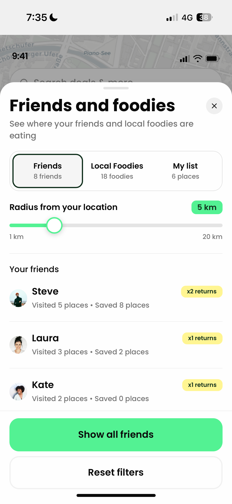
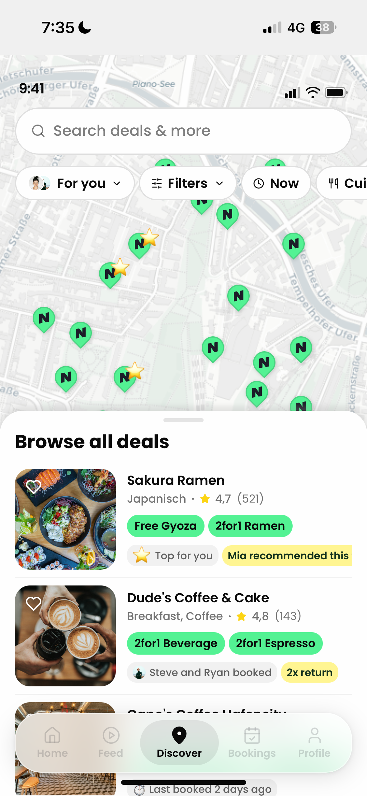

The current flow was a trust gap disguised as a discovery flow. Users browsed and decided completely alone, with no sense of what friends liked, no reliable reviews (most were five stars with zero detail or photos), and no signal beyond a star rating. The result: users routinely abandoned NeoTaste mid-decision to go verify the same restaurant on Google Maps, then came back (or didn't) to book.
NeoTaste · Product Design Concept · 2026
NeoTaste: Friends and Foodies
NeoTaste is a live restaurant discovery and deals app with paying subscribers across Germany, the UK, the Netherlands, and Austria. I was tasked with turning their purely transactional experience (find deal, book deal, done) into a social layer that helps people choose a restaurant because they want to go, not just because it's discounted.
Type Concept
Year 2026
Tools Figma · AI Prototyping



Project Walkthrough
See the full prototype in action
0:00
0:00
The Constraints
What I couldn't build, and why that mattered
Build on the existing experience
Design within NeoTaste, not replacing it. Core navigation, deal flow, and booking stay intact.
Keep it lightweight
Not a social network. No full profile pages, complex friend management, or anything that belongs in Instagram.
No heavy backend dependencies
If it needs a moderation team or a 6-month recommendation algorithm to build, scope it down.
Must work with 0 friends
The cold start experience matters just as much as the fully connected one.
~70% of users are on iPhone
Design mobile-first with iOS patterns in mind throughout.
The Strategy
One user. One metric. One clear target.
The User
Zara
Not "Gen Z foodies." Zara, someone who opens NeoTaste, sees a restaurant with a 5-star review that just says "great food, nothing else," doesn't trust it, and leaves the app to cross-check the same restaurant on Google Maps before deciding. NeoTaste was losing her at the exact moment she needed reassurance most.
The Metric
Bookings per subscriber per month
Our north star KPI wasn't "engagement" or "user satisfaction": it was bookings per subscriber per month, alongside trial-to-paid conversion and daily retention. The social layer only mattered if it changed whether someone booked, not whether they scrolled longer.
The Friction
A trust gap disguised as a discovery flow
Drop-off map
Discover page → restaurant detail → exits to Google Maps → returns or churns
The Logic
Surfacing trust where the decision actually happens
I designed a 'Friends and Foodies' layer that surfaces trust signals exactly where the decision happens (on the map and the restaurant detail page), instead of making users go looking for reassurance. It follows a signal hierarchy: friend proof first, then foodie proof for cold-start users with no friends on the platform yet, then community proof as the fallback. The right signal surfaces automatically based on what data actually exists for that user and that city, with no dead ends, no empty states that kill trust instead of building it.
1
Friend proof
"Steve visited, 3× return." A real person you know, with a record that speaks for itself, no review text needed.
2
Foodie proof
For cold-start users with no friends on the platform yet: verified local experts who've earned a Foodie badge through genuine activity.
3
Community proof
The aggregate fallback: subscriber saves, return visit counts, and booking trends when neither friend nor foodie data exists.

The Stress Test
What held up. What broke.
We put the Friends and Foodies proof block in front of users and the trust hierarchy held up: testers consistently trusted a friend's return visit over a one-off star rating, and several said they trusted friends-and-foodies more than platforms like TimeOut or Google, because those can be sponsored.
"A vetted friend or local foodie response beats a stranger's review because you know it isn't paid placement."
✓ Held up
Most testers said they wouldn't need to check anywhere else before booking. The filters, friend labels, and foodie recommendations covered the decision. One tester still cross-checked Instagram, but for vibe and photos specifically, not trust. A good scope boundary for a future iteration rather than a flaw in the current one.
✗ Broke
We'd designed a friends filter to show all friends' activity on the app, but when testing, 4 out of 5 testers tried to tap a single friend's name in the list expecting to see places that friend had eaten, or at least open their profile. The affordance was ambiguous because we hadn't decided what a friend's name was actually for in this context. After this feedback I updated the tap to open that friend's saved and visited restaurants on the map.
Testing also surfaced where the concept could go next: users independently asked for group bookings, occasion-based filtering (a cheap catch-up vs. a higher-end date night), and dish-level detail not just that a foodie recommended a restaurant, but which menu item they'd order again. All pointing at the same insight: users don't just want to know a place is good, they want to know good at what, and for whom.
The Build
A prototype you can actually click through
I didn't stop at static screens. I built a fully interactive HTML/JS prototype covering the connected user flow (map states, bottom sheet, proof blocks, and booking confirmation) so stakeholders could click through the real interaction logic, not just look at frames. The prototype shows the experience for a user who already has friends on the platform. The cold-start variant is designed and documented but not yet wired into the clickable build.